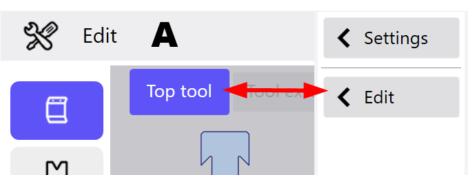
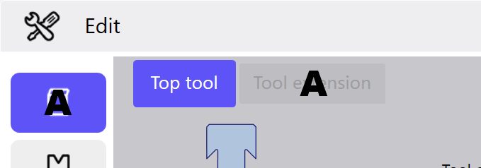
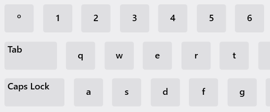

Die Menüs, Dialoge und Funktionen sind fast durchgängig mit Symbolen gekennzeichnet. Dieses Konzept erleichtert das intuitive Bedienen des Programms und bewirkt eine übersichtliche Benutzeroberfläche.
Info: Beim Ein- und Ausblenden von Dialogen passt sich die Grösse der Anzeigen in der Oberfläche dynamisch an. So können zusätzliche Dialoge eingeblendet werden, ohne dass diese bestehende Ansichten verdecken.
Über die Symbole in der Kopfzeile werden alle Bereiche und Module des Programms aufgerufen (See «Elemente in der Kopfzeile»).
Durch Wählen des Textereichs (A) der Kopfzeile werden zusätzliche Menüpunkte eingeblendet. Sobald keine Schaltfläche mehr gewählt wird, werden diese Menüpunkte wieder ausgeblendet.

Wenn Sie die Funktion Technologie bearbeiten wählen wird auf der linken Bildschirmseite die Menüleiste mit den Schaltflächen der einzelnen Technologie-Menüs angezeigt.

Das Ansichtsfenster enthält die Hauptansicht und je nach gewählter Funktion noch zusätzliche Dialoge . In den Dialogen werden je nach Menü die Biegeprozesse sowie Ansichten zur Biegefolge Als Biegefolge wird die Abarbeitung aller Biegekanten eines Teils in einer bestimmten Reihenfolge bezeichnet. Ein Biegeteil kann meist durch mehrere Biegefolgen gebogen werden. Beim automatischen Setzen der Biegefolge ermittelt das Programm die optimalste Biegefolge und weist es dem Biegeteil zu. und dem Stationsplan siehe Einrichtplan angezeigt.

In der Funktionsleiste können über die entsprechenden Schaltflächen Aktionen gestartet oder Funktionen für die entsprechende Ansicht gewählt werden. Sind in der aktuellen Ansicht keine Funktionen verfügbar, wird die Funktionsleiste nicht angezeigt.

In der Meldungsliste werden alle anstehenden Meldungen mit dem entsprechenden Status und der Herkunft angezeigt.

Diese Dialoge werden automatisch von rechts nach links in die Oberfläche eingeblendet. Der Ursprungsdialog wird dabei ausgeblendet. Durch Tippen in die Kopfzeile des Dialogs (A) wird dieser wieder ausgeblendet und der vorhergehende Dialog wieder eingeblendet.

Zur übersichtlichen Darstellung der verschiedenen Bereiche in der Software, werden Register verwendet. Die jeweiligen Dialoge werden durch Tippen auf das entsprechende Register angezeigt. Jedes Register ist durch ein bestimmtes Symbol oder Text gekennzeichnet (A).

Mit diesem Tastatur-Dialog können frei definierbare Werte in ein Feld eingetragen werden. Der Dialog erscheint, sobald ein Feld mit frei definierbaren Werten gewählt wurde.

Mit diesem Dialog können numerische Werte in ein Feld eingetragen werden. Der Dialog erscheint sobald ein Feld mit numerischen Werten gewählt wurde.

Mit diesem Dialog können vorgegebene Werte in ein Feld eingetragen werden. Der Dialog erscheint sobald ein Feld mit vordefinierten Werten gewählt wurde.